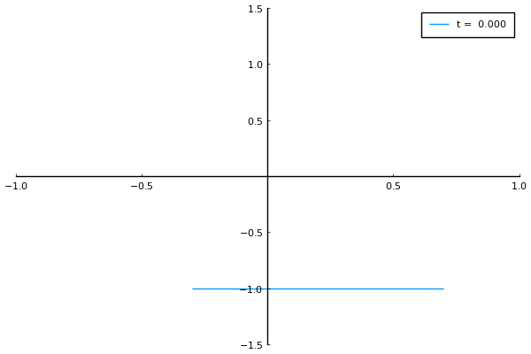

AerostructuralDynamics


Aerostructural Dynamics Analysis and Simulation Framework
Author: Taylor McDonnell
AerostructuralDynamics is an extensible multi-fidelity modeling and analysis framework which is designed to simulate the behavior of coupled and/or decoupled aerodynamic, structural, and/or rigid-body dynamics models.

Package Features
- Provides a framework for coupling multiple models together for analysis and/or simulation.
- Defines a variety of aerodynamic, structural, dynamics, control surface, and control system models
- Aerodynamics Models:
- Steady and/or Quasi-Steady Thin Airfoil Theory (2D)
- Wagner's Function (2D)
- Peters' Finite State (2D)
- Lifting Line (3D)
- Structural Dynamics Models:
- Two Degree of Freedom Typical Section (2D)
- Geometrically Exact Beam Theory (As implemented by GXBeam) (3D)
- Dynamics Models:
- Rigid Body (3D)
- Control Surface Models:
- Steady State Linear Flap (2D)
- Lifting Line Flaps (3D)
- Control System Models:
- Trim (3D)
- Aerodynamics Models:
- Interfaces with DifferentialEquations
- Verified and/or validated against theoretical, computational, and/or experimental results (see the examples)
- May be easily extended to include additional models and/or model couplings. (See the developer guide, pull requests are welcome)
Installation
Enter the package manager by typing ] and then run the following:
pkg> add https://flow.byu.edu/AerostructuralDynamics.jlUsage
See the Getting Started section of the documentation.